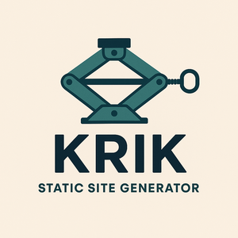

Ho passato gli ultimi 2/3 giorni a sviluppare un generatore statico di siti in rust usando esclusivamente Claude Code.
La mia conoscenza di rust è piuttosto basilare: comprendo il codice quando è ben scritto ma non ho ancora la pratica necessaria a sviluppare uno strumento sofisticato.
Ad ogni modo, per questo progetto non ho dovuto toccare una sola riga di codice, dal momento che ho dato tutte le istruzioni a Claude. L'IA si è occupata perfino dei rilasci.
L'impressione che ho avuto usando questo strumento è la stessa che ho avuto negli anni '90 quando ho visto Internet per la prima volta.
Non credo ci sia altro da aggiungere.
Ah, sì... il progetto si trova su github e una demo del sito generato è questa pagina che stai leggendo in questo momento.
Una demo più completa di tutte le feature si trova qui.